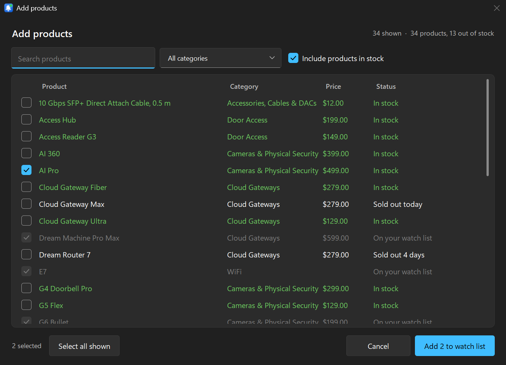
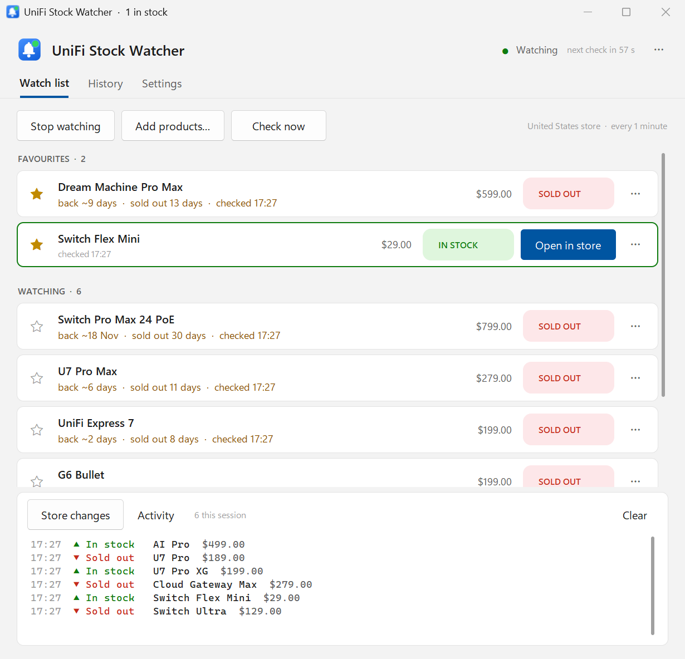
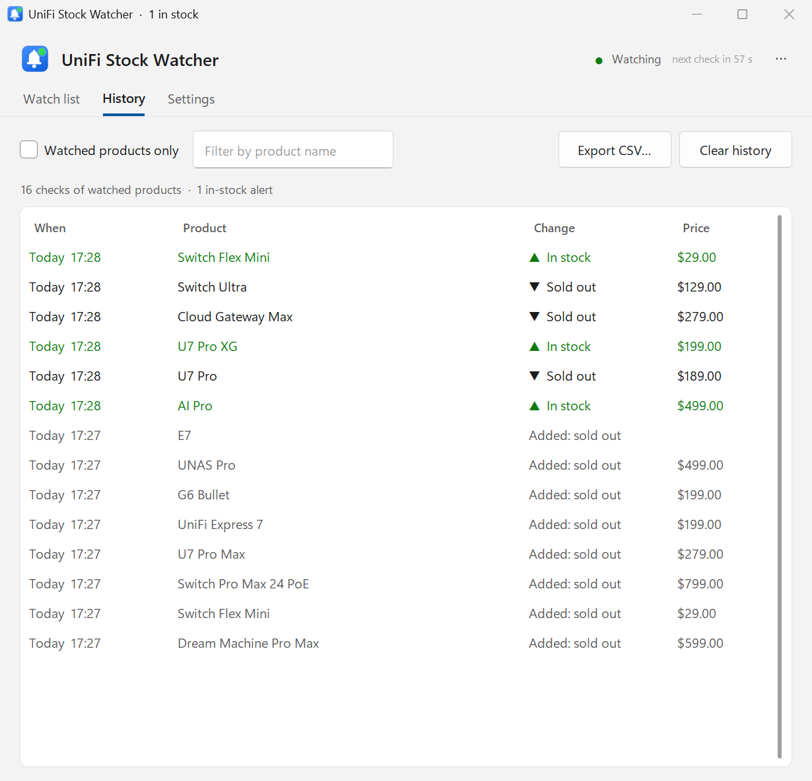
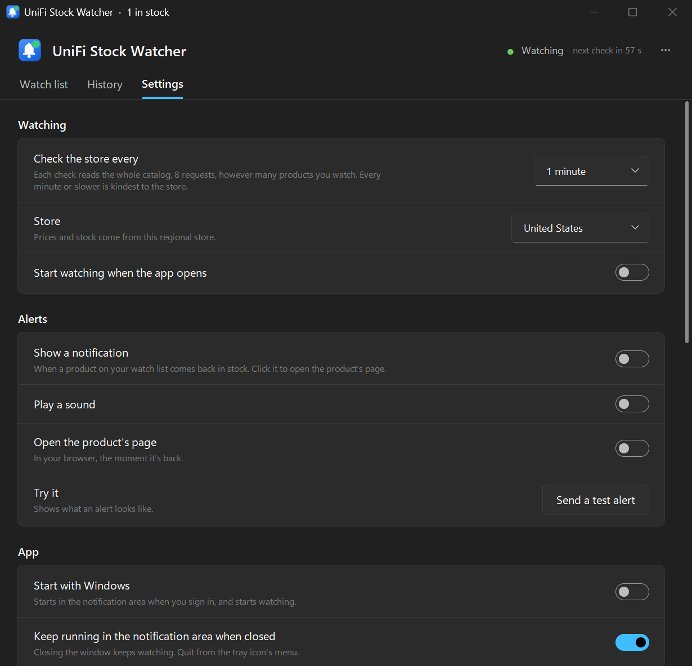

Restocks, without refreshing the store all day
The whole store, every check
Each check reads the entire UniFi catalog, about 490 products in 8 requests, whether you watch one product or fifty. Every minute by default, never faster than every 15 seconds.
Alerts that reach you
A notification you can click to open the product, a sound, and its page opened in your browser, once each time it comes back. On your phone too, through ntfy, Pushover, Discord or Slack, or as JSON to Home Assistant and the like.
Restock estimates
The store's own restock date and how long a product has been sold out, like back ~7 Nov · sold out 13 days, on your list and in the catalog.
Everything that changed
A live feed of every product coming into or going out of stock anywhere in the store, and a history of your watched products' changes you can search and export.
Quietly in the background
Closing the window keeps watching from the notification area, where the icon turns green when something you want is in stock. Start with Windows puts it there when you sign in.
Keeps working when the store changes
Ubiquiti renames categories and moves products around. The app follows the store's redirects, adopts new categories by itself, and a nightly check against the real store catches anything else the day it ships.
Signed updates
It checks GitHub once a day and installs a new version with one click, only if the download carries the release signature built into the app and matches its signed checksum.
At home on Windows 11
Light and dark themes that follow Windows, in Windows' accent colour or one you pick, sharp at any display scale. Four stores: United States, Europe, United Kingdom and Canada.
No account, nothing sent
It reads the store's public catalog, the same data its web pages are built from. No login, no API key, and nothing about you or your list goes anywhere. Phone alerts go only to the service you pick.
A closer look




All pictures are from the app's demo mode: real product names with made-up stock, prices and dates.
Install
Installer (recommended)
Download UnifiStockWatcher-Setup.exe and run it. It installs for your Windows user only, with no admin prompt, adds a Start menu shortcut, and uninstalls from Settings → Apps.
The app isn't code-signed, so Windows may show Windows protected your PC the first time: click More info, then Run anyway.
Portable
Download the zip, unzip it somewhere of your own (a USB stick works), and run UnifiStockWatcher.exe. It keeps its watch list in its own folder and updates itself in place.
Avoid C:\Program Files, which updates can't write to.
Then
Click Add products…, tick what you want, and click Start watching. That's all. Turn on Start with Windows in Settings to keep it watching from the notification area.
Also a command-line watcher, UnifiStockWatcher-cli.exe, for a server or Task Scheduler.
Coming from version 2? The first start copies your watch list, settings and history over; nothing is lost. Prefer Python? It runs from source too: see the README.
Feedback
Found a bug or have an idea? Open an issue on GitHub; in the app, Settings → About → Report… fills in the version. If a product shows the wrong stock, include its store link.